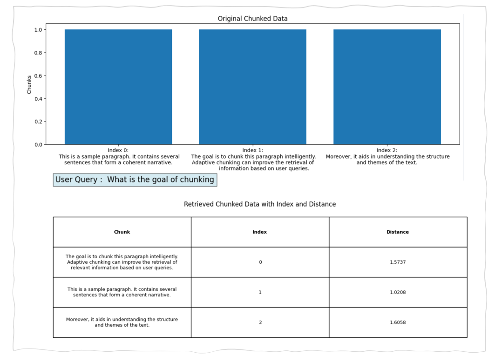

Use Cases
Manuscripts (Publishing)
Authors and editors can use adaptive chunking to refine manuscripts by breaking down content into coherent segments, ensuring that each section effectively communicates its intended message while maintaining overall narrative flow.
Customer Support
Support systems can implement adaptive chunking to organize and retrieve information from knowledge bases more effectively, allowing agents to provide quicker and more accurate responses to customer inquiries.
Adaptive Chunking Code
Example of Adaptive Chunking Result



Pros and Cons of Adaptive Chunking
| Pros | Cons |
|---|---|
| Enhanced Relevance : By dynamically adjusting chunk sizes based on content, adaptive chunking helps ensure that each chunk contains coherent and relevant information, improving the quality of outputs. | Dependence on Quality of NLP Tools : The effectiveness of adaptive chunking relies on the accuracy of the natural language processing algorithms used, which may vary in performance across different languages or types of text. |
| Better Handling of Long Texts : It allows for effective processing of long documents by breaking them into meaningful parts, which can be particularly useful for LLMs with input size limitations. | Overhead : The process of analysing overlapped text can introduce additional computational overhead, which may negate some efficiency gains, especially for real-time applications. |